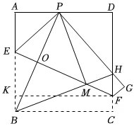
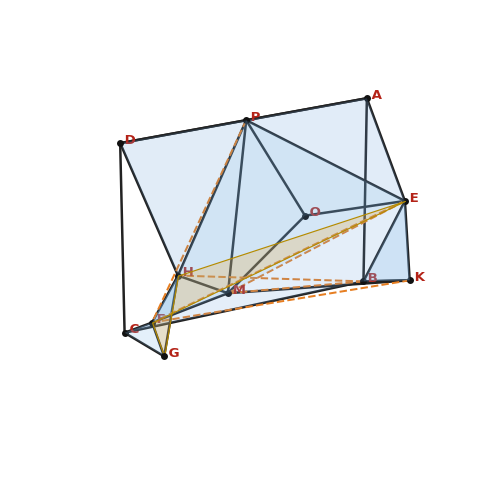

折叠正方形截面体
m3data_zoo.crawled.KuakeS1Pretrain|000468|853843|21e3adf8e04152daf9108d819dbdbdb0.jpeg|2
-
identify该立体图形的名称是什么？答案：A. 多面体
-
countedges该立体图形共有多少条棱？答案：A. 25
-
collinearA, P, D顶点 A、P、D 是否在同一条直线上？答案：是
-
relationA, P, B, C线段 AP 与线段 BC 的位置关系是什么？答案：D. 平行
-
distanceA, E顶点 A 与顶点 E 之间的距离是多少？答案：B. 0.50
-
angleP, A, E∠PAE 等于多少度？答案：90.0°
-
ratioP, E, A, E线段 PE 与线段 AE 的长度之比是多少？答案：D. 1.41
-
coplanarA, B, C, EA、B、C、E 四点是否共面？答案：否